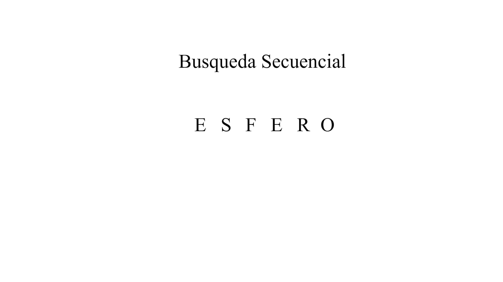
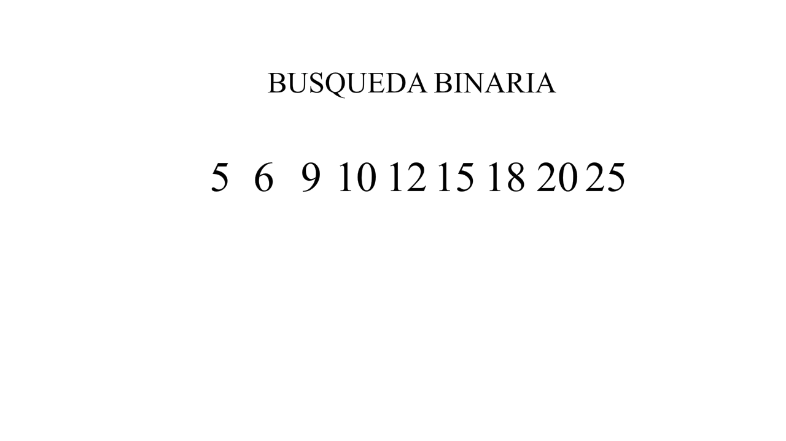

Algoritmos de Búsqueda y Ordenamiento
Algoritmos de Búsqueda
- » Búsqueda Secuencial
- » Búsqueda Binaria
Algoritmos de Ordenamiento
- » Ordenamiento de Burbuja
- » Ordenamiento por Inserción
- » Ordenamiento por Selección
- » Ordenamiento Shell
Algoritmos de Búsqueda
Su principal funcionamiento consiste en ir comparando el elemento que se esta buscando con cada elemento del arreglo, hasta que lo encuentra.
Para utilizar este algoritmo, el arreglo debe estar ordenado y no se deben repetir los elementos. La búsqueda binaria consiste en dividir el arreglo en dos subarreglos más pequeños, y comparar el elemento con el del centro. Si coinciden, la búsqueda se termina. En cada iteración el arreglo se divide en dos.
Algoritmos de Ordenamiento

Se toma el dato que esta en la primera casilla y la comparo con la segunda casilla: si es mayor, la pongo a la derecha, si es menor a la izquierda. Luego tomo la tercera casilla y la comparo con las casillas que ya ordene, buscando su posición correspondiente, hasta tener todas en orden.

Este metodo tiene unos pasos especificos:

Se van dando pasadas con el mismo salto hasta que en una pasada no se intercambie ningún elemento de sitio. Entonces el salto se reduce a la mitad, y se vuelven a dar pasadas hasta que no se intercambie ningún elemento, y así sucesivamente hasta que el salto vale 1.

Estructuras de información
Estructuras 402
Juan Sebastián Cardozo Pachón
Brayan Stiven Cruz Aguilar